モード機能
モード機能とは
POPstationには、モードと呼ばれる特定の用途に応じた回答を生成する機能があります。 このモード機能を利用してAIとのやり取りを行います。
モードの種類
POPstationには2種類のモードが用意されています。
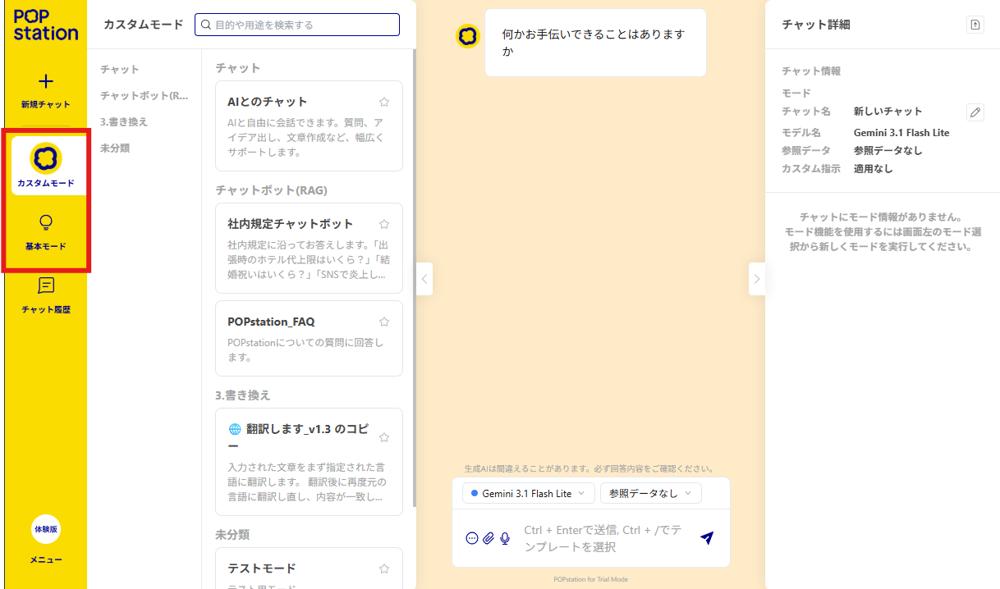
基本モード
POPstation運営チームが提供する基本的なモードです。プロンプトや設定は常に最新かつ最適な状態に自動更新されるため、そのまま安心してご利用いただけます。
基本モードの特徴
- 編集不可: 基本モードのプロンプトや設定はユーザーが直接編集できません（閲覧・利用専用）。
- 自動更新: POPstation運営チームにてモードを更新した場合、ユーザー側にも即座に反映されます。
カスタムモード
ご自身、または組織内のメンバーが作成したオリジナルのモードです。プロンプトや設定を自由に編集できます。 カスタムモードの作成・編集方法については モード編集ページ をご参照ください。
モード機能の利用
モード機能を利用する基本的な手順は以下の通りです。
-
メイン画面から左側にある「モード選択」欄より、実行するモードをクリックします。
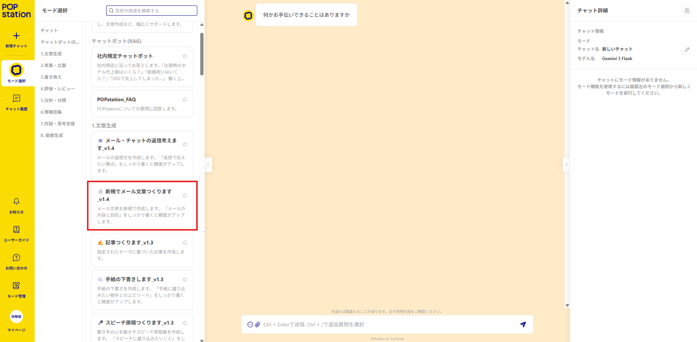
-
モード実行画面が表示されます。この画面で、プロンプト（AIへの指示）の入力や、必要に応じてAIモデルの選択、データ参照先の指定、ファイルの添付などを行います。
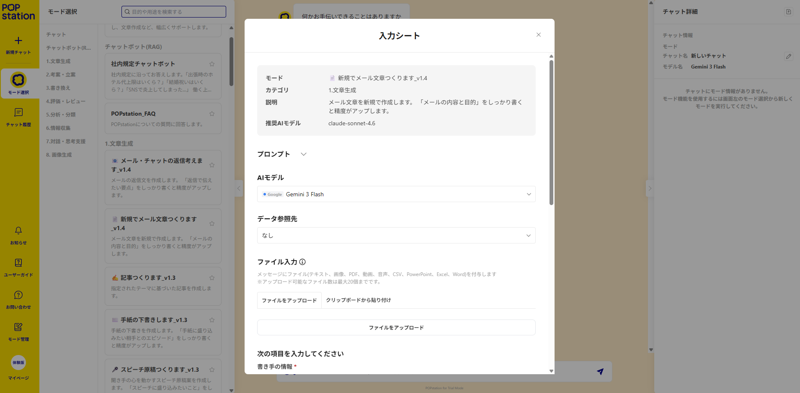
-
モードの条件入力欄に必要事項を入力し、ページ下部にある「モードを実行する」ボタンをクリックします。
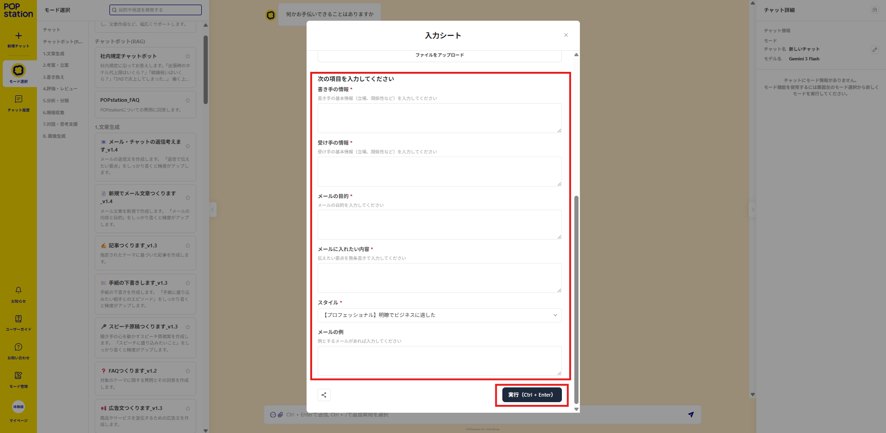
-
AIより回答が表示されます。追加質問をする場合や、回答の手直しを依頼する場合は、画面下部にあるメッセージボックスから入力を行ってください。
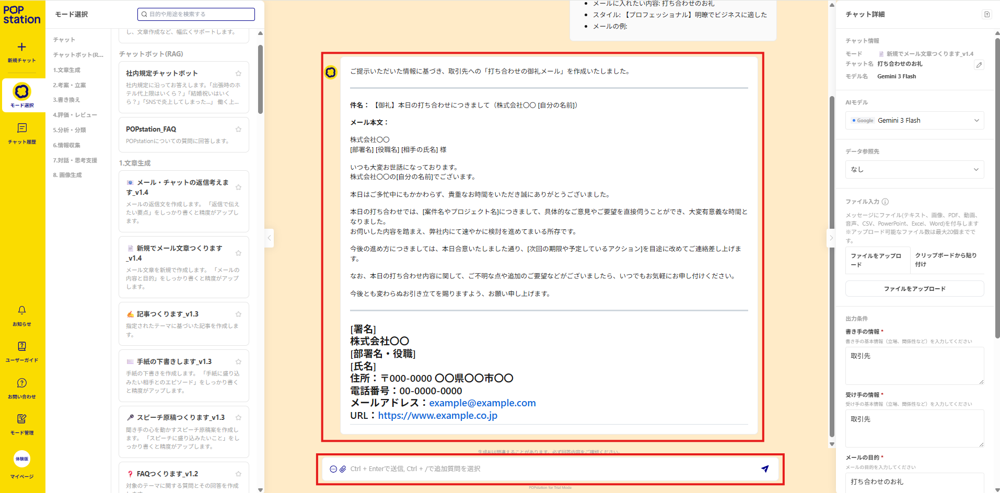
AIモデルの変更
モード実行画面の「モデル選択」ドロップダウンから、モード実行に使用するAIモデルを変更することができます。
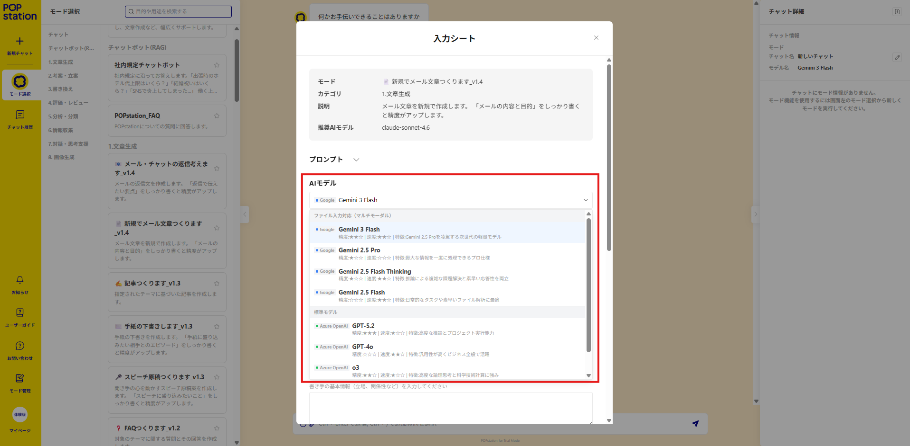
各モデルの特徴については、AIモデル比較表のページをご参照ください。
データ参照先の指定
モード実行画面の「データ参照先」ドロップダウンを使用することで、回答生成に外部データソースを活用できます。
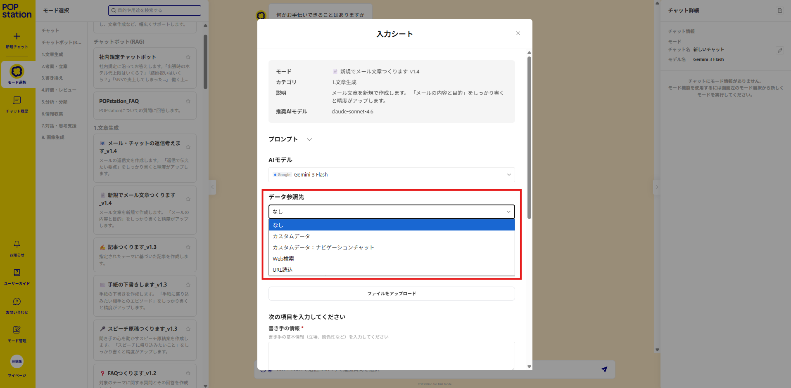
選択可能なデータ参照先について
-
なし: 外部データソースを利用せずに、AIモデルが持つ知識のみで回答を生成します。
-
Web検索: リアルタイムのWeb検索結果を回答生成の参考にします。
-
利用方法:
- 「データ参照先」ドロップダウンから「Web検索」を選択します。
- 「モードの条件入力」エリアにプロンプトを入力します。
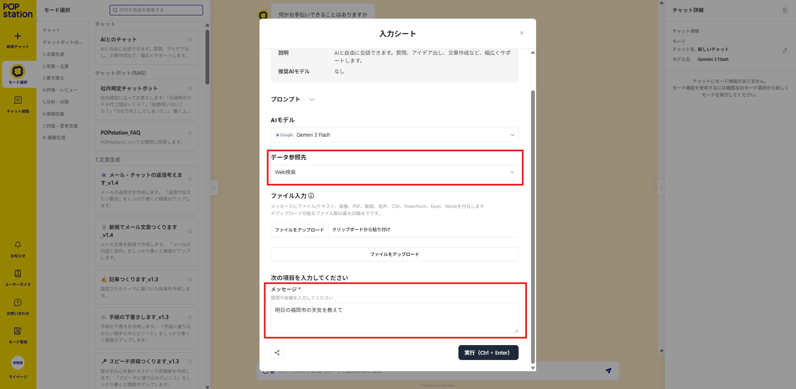
- 「モードを実行する」ボタンをクリックすると、AIがWeb検索結果を考慮して回答を生成します。
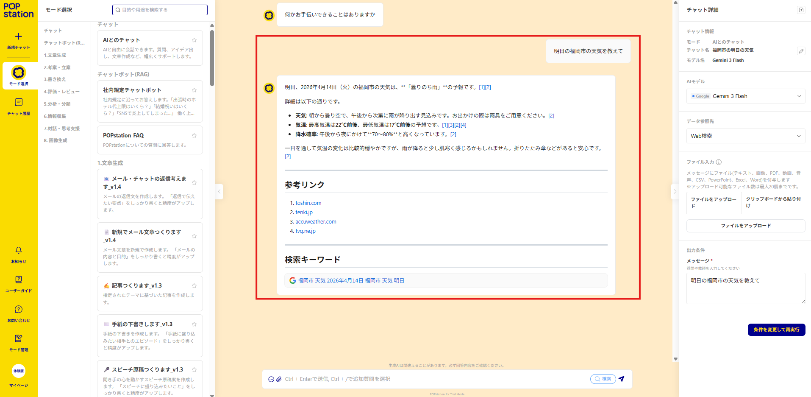
Web検索の仕組み
Web検索の仕組みは、利用するAIモデルによって異なります。
-
Geminiシリーズモデル:
- AIがプロンプトの意図を理解し、最適なキーワードで検索します。
- アクセスしたページの情報を参考にして、回答を生成します。
-
上記以外のモデル（GPTシリーズ、Claudeシリーズなど）:
- AIがプロンプトの内容をもとに、検索用のクエリを自動生成してWeb検索します。
- 検索結果の上位ページのURLにアクセスし、その情報を参考にして回答を生成します。
-
-
URL読込: 指定したURLのウェブページコンテンツを読み込み、その情報を基に回答を生成します。
-
利用方法:
- 「データ参照先」ドロップダウンから「URL読込」を選択します。
-
「モードの条件入力」エリアに、読み込ませたいウェブページのURLを含む形でプロンプトを入力します。
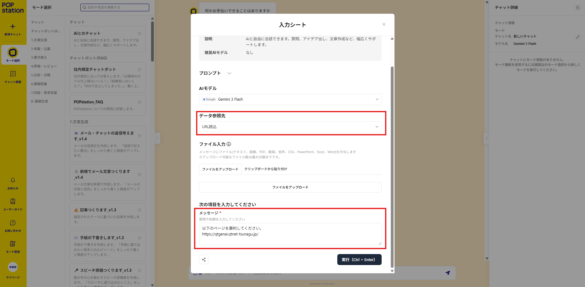
指定するURLの数について
複数のURLを指定することも可能ですが、処理の効率性と精度のため、5つ以下のURL指定を推奨しています。
-
「モードを実行する」ボタンをクリックすると、AIが指定されたURLの情報を考慮して回答を生成します。
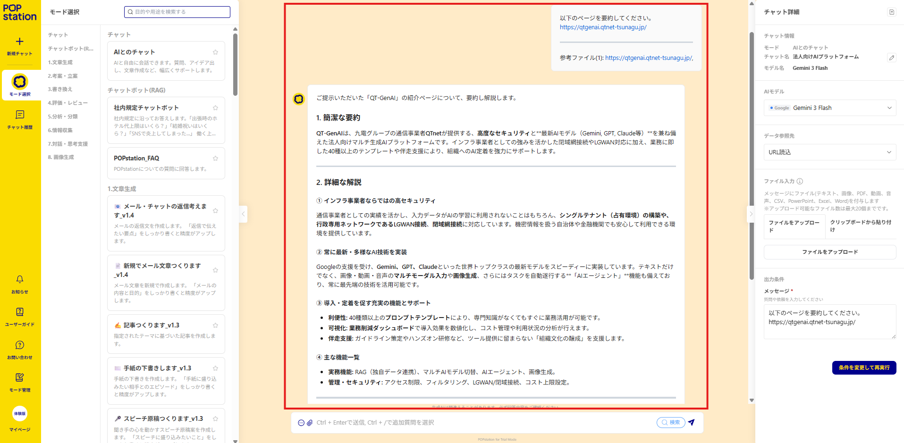
-
-
カスタムデータ: 事前にお客様が登録した独自のドキュメントや資料（カスタムデータ）をAIが参照し、回答を生成します。
- カスタムデータの登録や管理に関する詳細は、カスタムデータ管理のページをご参照ください。
- 利用方法:
- 「データ参照先」ドロップダウンから「カスタムデータ」を選択し、その下に表示される「参照データフォルダ」ドロップダウンから、利用したいデータフォルダを選択します。
- 「モードの条件入力」エリアに、カスタムデータを参照して実行させたいタスクに関するプロンプトを入力します。
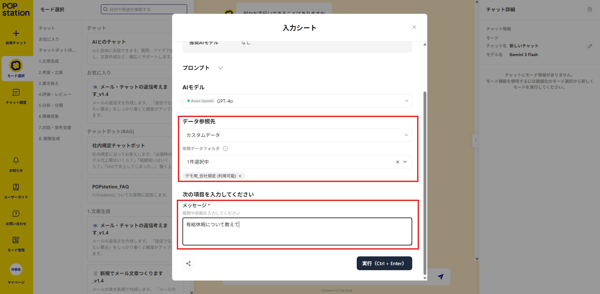
- 「モードを実行する」ボタンをクリックすると、AIが選択されたデータフォルダ内の関連するカスタムデータを検索し、その情報を基に回答を生成します。
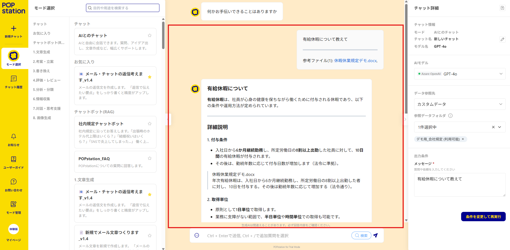
-
カスタムデータ:ナビゲーションチャット: 曖昧な質問からでも迷わず正解へ導く機能です。カスタムデータに対して、AIが関連するファイルを提示しながら対話を進めます。
-
利用方法:
- 「データ参照先」ドロップダウンから「カスタムデータ:ナビゲーションチャット」を選択し、その下に表示される「参照データフォルダ」ドロップダウンから、利用したいデータフォルダを選択します。
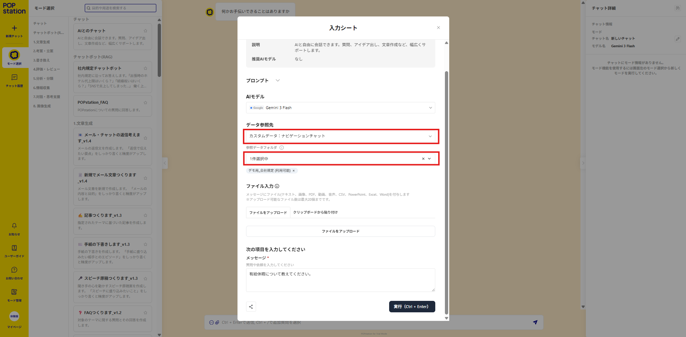
-
「モードの条件入力」エリアに、カスタムデータを参照して実行させたいタスクに関するプロンプトを入力し、「モードを実行する」ボタンをクリックします。
-
AIがプロンプトを基に質問内容をより具体化するための選択肢を提示します。
-
提示された選択肢を選択することで、目的の回答に辿り着くことができます。
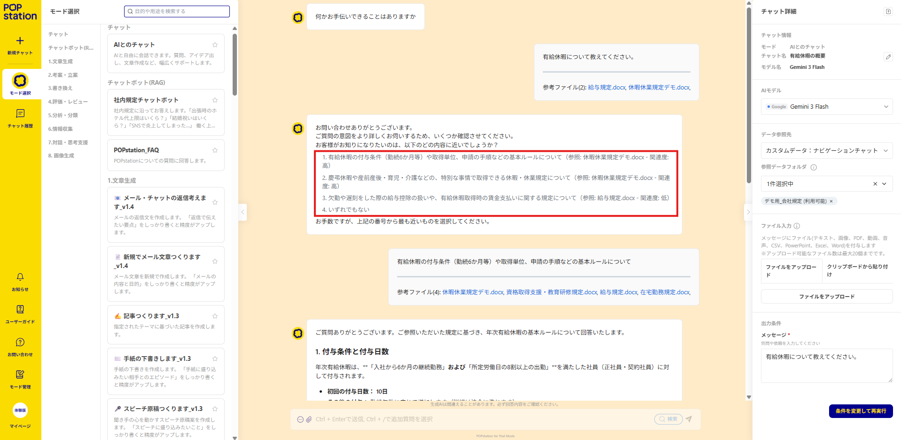
-
最終回答が表示されたら、フィードバックボタン（「はい」「いいえ」）で満足度を回答できます。
-
追加の質問がある場合は、チャット欄から質問を送信してください。
- 「データ参照先」ドロップダウンから「カスタムデータ:ナビゲーションチャット」を選択し、その下に表示される「参照データフォルダ」ドロップダウンから、利用したいデータフォルダを選択します。
-
ファイル入力機能
ファイル入力機能に対応しているAIモデルでは、画像・文書（PDF、テキスト、CSV、Markdown、PowerPoint、Excel、Word）の入力ができます。Geminiシリーズではさらに音声・動画の入力にも対応しています。
※モデルごとに対応しているファイル形式やファイル数は異なります。AIモデル比較表をご参照ください。
ファイルの変換と精度について
- CSVファイル: テキストデータに変換して読み込まれます。
- Markdownファイル（.md）: テキストデータとして読み込まれます。
- PowerPoint, Excel, Wordファイル: ファイル内のテキストと埋め込まれた画像を抽出して読み込まれます。
- レイアウトや図形の配置そのものは送信されないため、複雑なレイアウトに依存した内容は正しく伝わらない場合があります。
- Excelの非表示シートは読み込まれません。
ファイルの保存期間について
- セキュリティの都合上、アップロードされたファイルは30日後に自動的に削除されます。
- ファイルが削除された後もチャット履歴は残りますが、ファイルの内容を参照することはできなくなります（ファイルが除外された状態で会話が継続されます）。
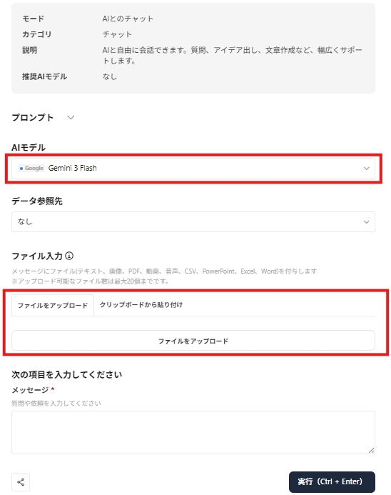
データの添付方法は「ファイルのアップロード」と「クリップボードからの貼り付け」の2種類あります。
「ファイルのアップロード」の場合
- 「ファイルをアップロード」タブをクリックしてください。
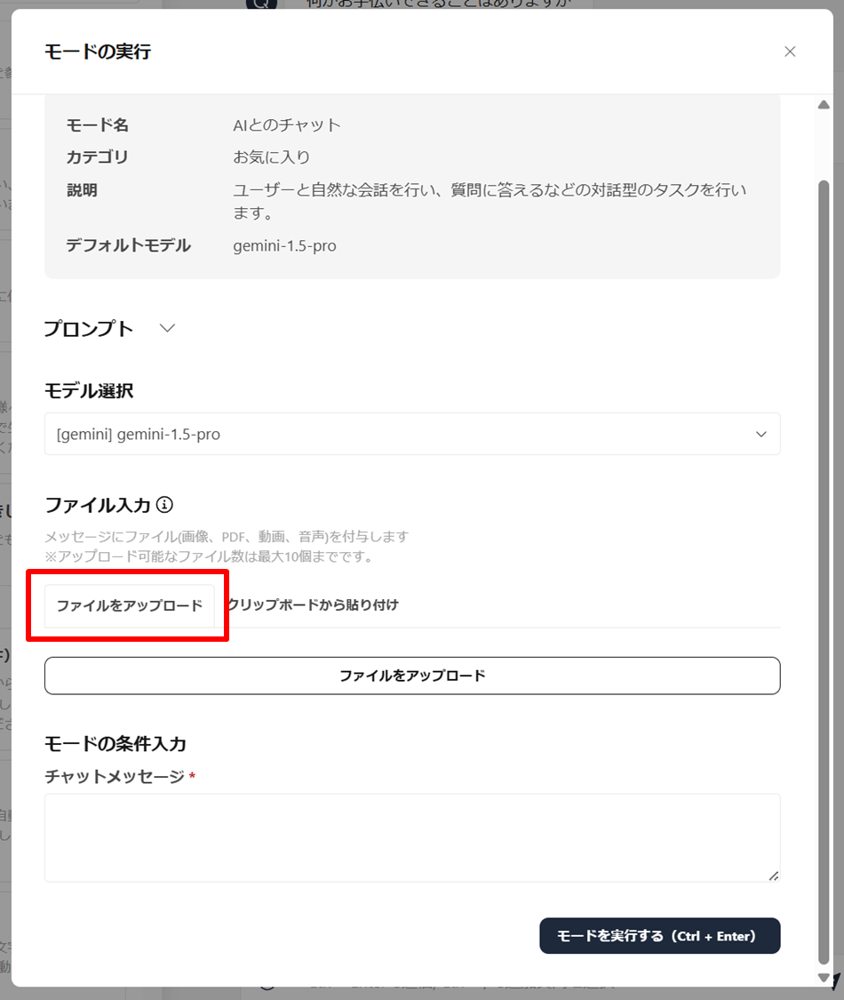
- 「ファイルをアップロード」ボタンをクリックして、ファイルをアップロードしてください。
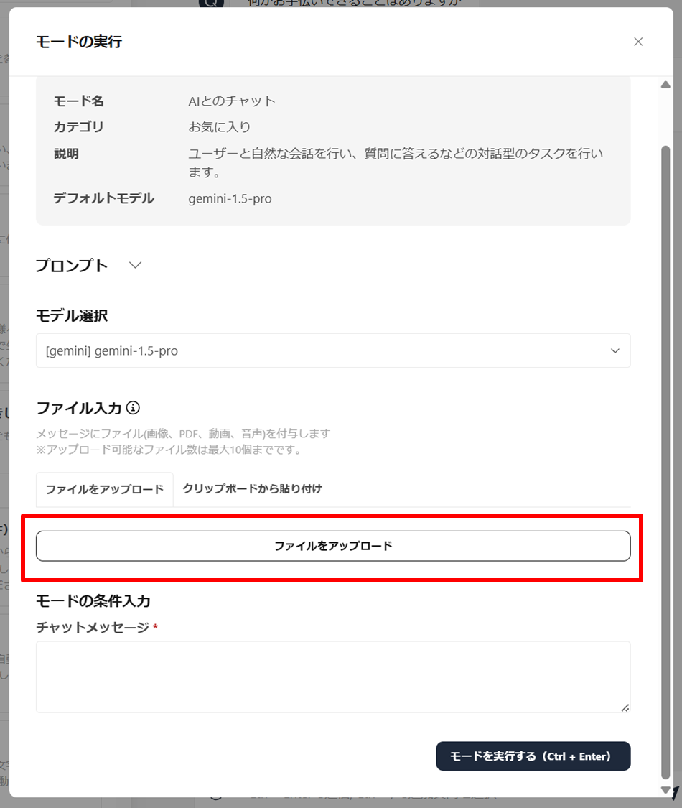
- モードの条件を入力して、「モードを実行する」ボタンをクリックしてください。
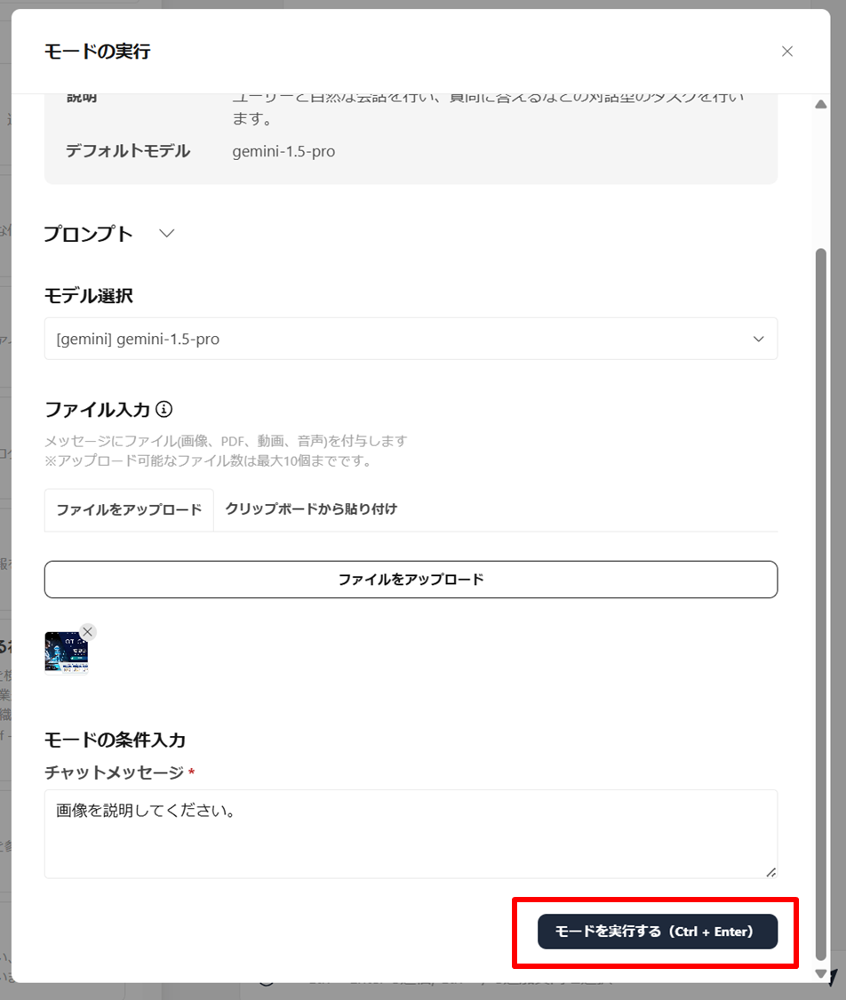
「クリップボードからの貼付け」の場合（画像のみ）
- 「クリップボードからの貼付け」タブをクリックしてください。
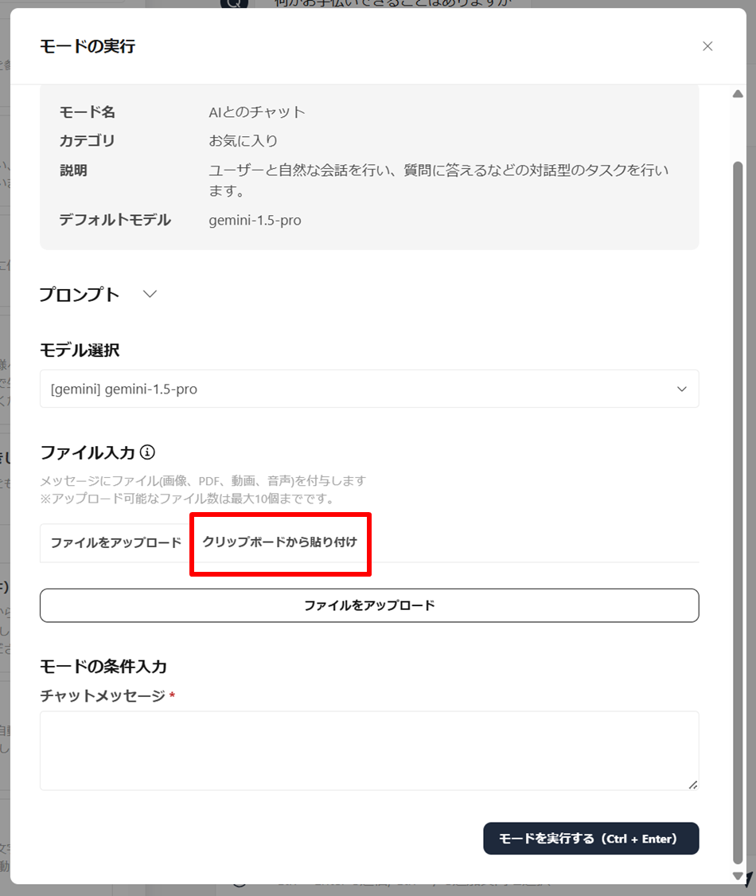
- 「ここをクリックしてから画像を貼り付け」部分をクリックして、Ctrl+Vでクリップボードの画像を貼り付けてください。
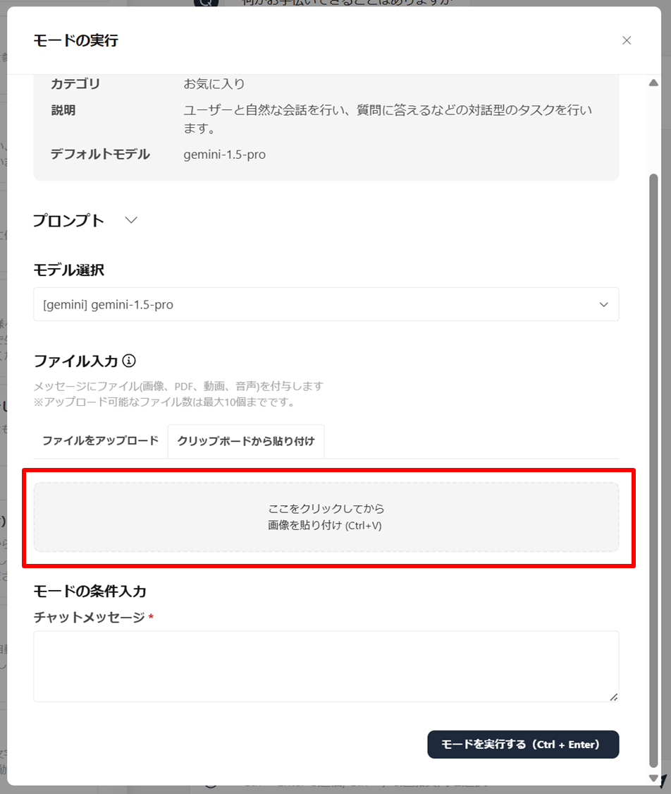
- モードの条件を入力して、「モードを実行する」ボタンをクリックしてください。
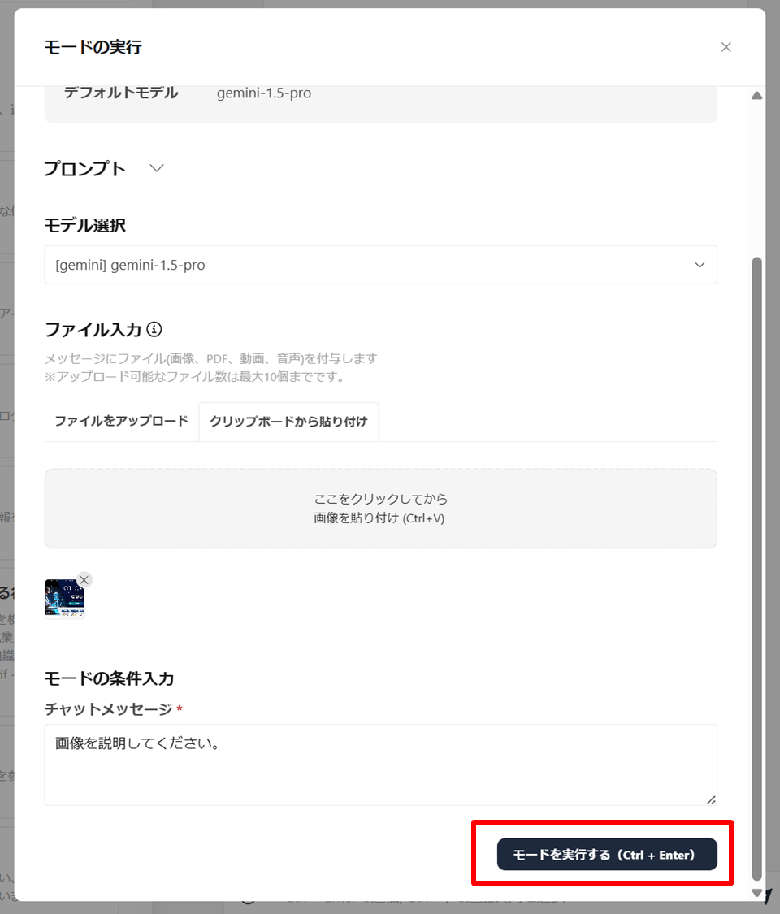
画像生成機能
画像生成機能に対応しているAIモデル（現在 Gemini 3.0 Pro Image、Gemini 2.5 Flash Image のみ）では、プロンプトから画像を生成できます。
-
利用例:
- 画像生成機能に対応しているモデルを選択し「モードの条件入力」エリアに、生成したい画像の内容を説明するプロンプトを入力します。
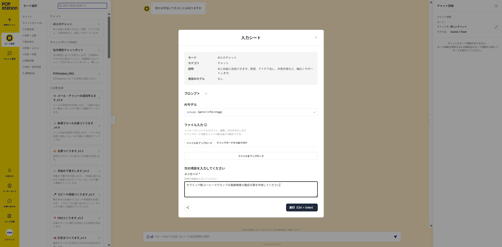
- 「モードを実行する」ボタンをクリックすると、確認ダイアログが表示されます。「同意して生成する」をクリックします。
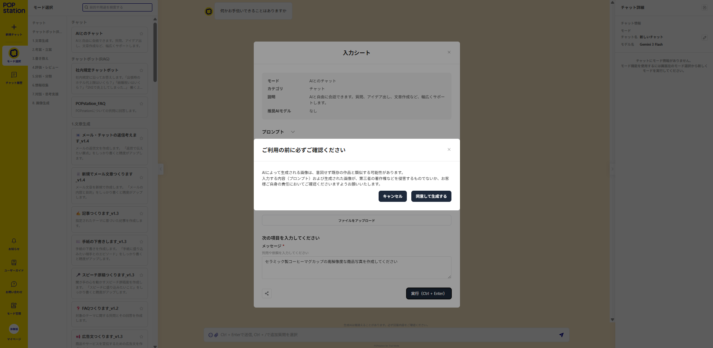
- AIがプロンプトに基づいて画像を生成します。
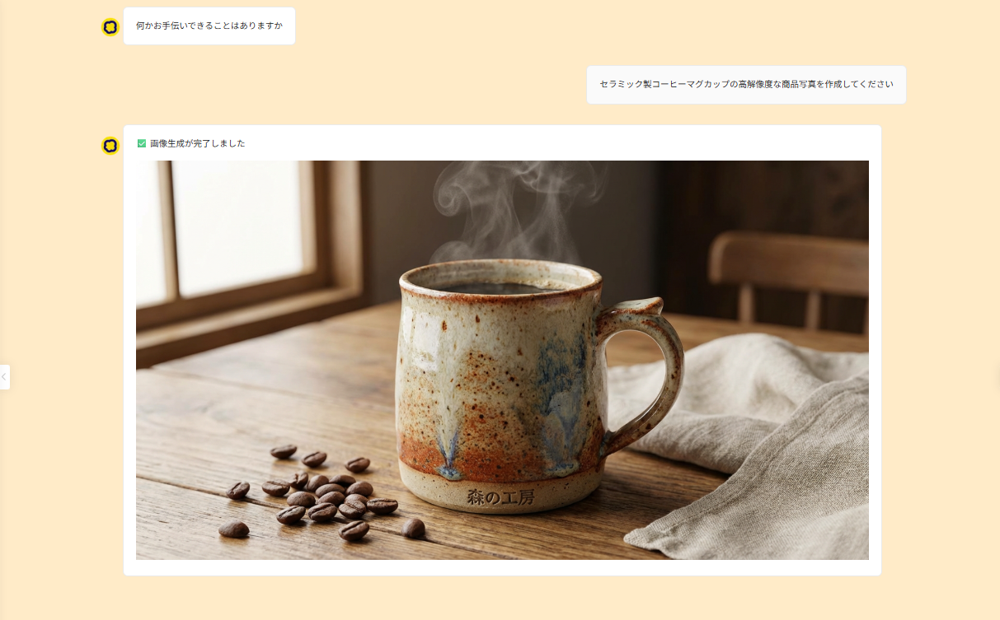
- 画像生成機能に対応しているモデルを選択し「モードの条件入力」エリアに、生成したい画像の内容を説明するプロンプトを入力します。
-
生成した画像の編集: 生成された画像に対して、チャットで修正を指示することができます。例えば、「猫を犬に変えてください」のように、具体的な変更内容を指示します。
-
入力した画像の編集: ファイル入力機能で画像をアップロードし、その画像に対して編集を指示することも可能です。「この画像の色を青に変えてください」のように、チャットで指示してください。
モードお気に入り機能
- お気に入りに設定するモードの右にあるお気に入りボタン★をクリックします。
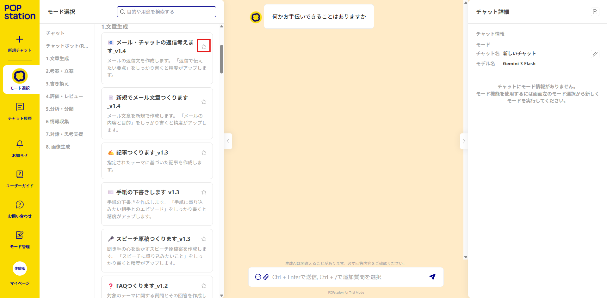
- モード選択画面上部に「お気に入り」カテゴリが作成され、設定したモードが表示されます。
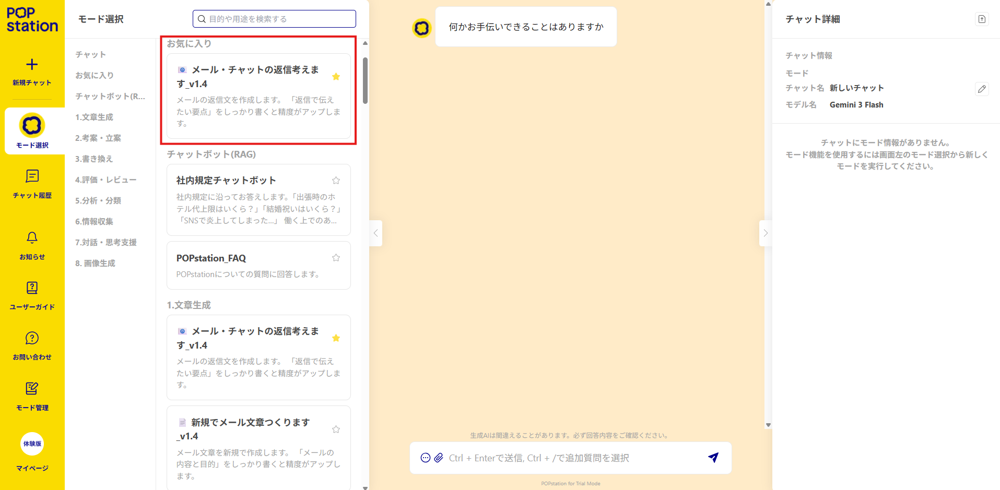
お気に入りモードの並び替え
お気に入りに登録したモードは、ドラッグ操作で表示順を自由に並び替えることができます。よく使うモードを使いやすい位置に配置し、業務に合わせてカスタマイズいただけます。
- お気に入りの「お気に入りを並び替える」ボタンをクリックします。
- 並び替えたいモードを、左側のハンドルをつかんでドラッグし、好きな位置に移動します。
- 並び順は自動的に保存され、リロードや再ログインの後も保持されます。並び替えを終えるには「× 終了」をクリックします。
並び替えについて
- 並び順はユーザーごとに個別に保存されます。ご自身の並び替えが他のユーザーの表示順に影響することはありません。
- 並び替えは「お気に入り」に表示されるモードの順序に適用されます。
モードの共有
モード実行画面にある「URL共有」ボタンをクリックすることで、モードへの直接リンクをクリップボードにコピーできます。 社内でのモード共有やマニュアルへの記載などが、より手軽に行えるようになります。
- モード実行画面にある「URL共有」ボタンをクリックします。
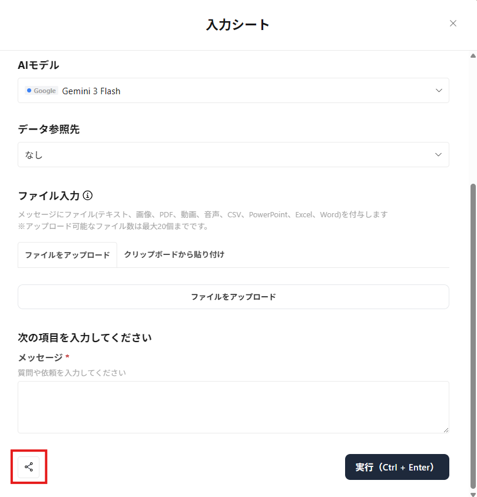
- クリップボードにURLがコピーされます。
アクセス権限について
共有されたURLにアクセスしても、そのモードを利用する権限がないユーザーは閲覧できません。
Deep Research
DeepResearchは、AIが自律的にWeb検索と分析を行い、詳細なレポートを作成するリサーチエージェント機能です。 複雑な調査タスクに対して、AIが検索計画の立案から実行、情報の整理・統合までを代行します。
- モード一覧から「AIとのチャット」モード（または任意のモード）を選択します。
- 「モデル選択」ドロップダウンから「o3-deep-research」を選択します。
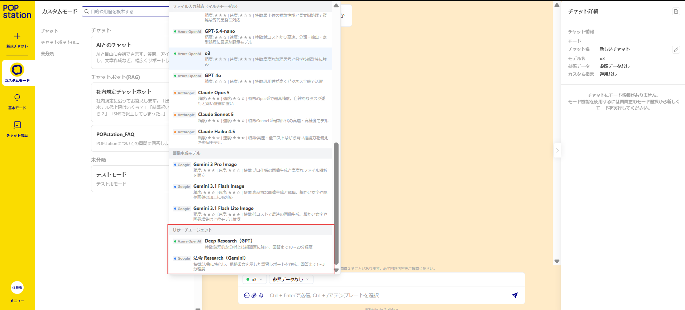
- 「モードの条件入力」エリアに、調査したい内容を入力し、「モードを実行する」ボタンをクリックします。
- 確認ダイアログが表示されます。内容を確認して「実行する」をクリックします。
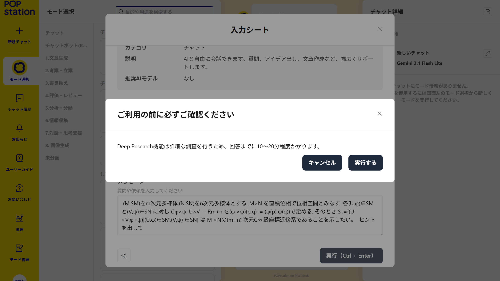
- AIが自律的にWeb検索と分析を行い、詳細なレポートを作成します。
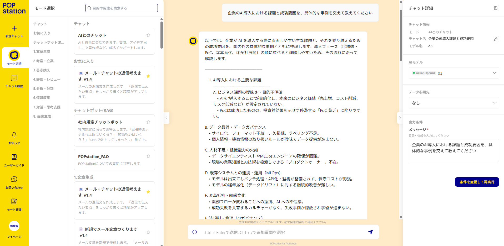
利用料金の目安
- 利用料金（税抜）: 0.4円/文字
- 1実行あたりの平均提供価格: 約4,536円
- 平均合計文字数（約11,341文字）× 定価（0.4円/文字）として算出
注意事項
- 料金について: Deep Researchは長文の調査結果を出力するため、1回あたりのご利用料金が高額になる傾向がございます。実行前に料金の目安をご確認のうえご利用ください。
- 待ち時間: 詳細な調査を行うため、回答までに10〜20分程度かかります。
- シングルターン: 1回のチャットで完結します。結果に対する追加の質問はできません。続けて調査を行う場合は「新しいチャット」を開始してください。
モード検索
- 画面左上にある検索ボックスをクリックしてください。
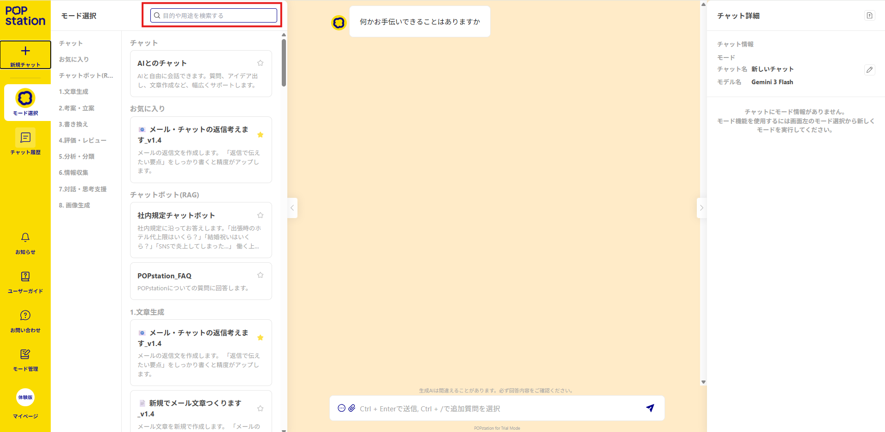
- 検索キーワードを入力すると、検索結果が表示されます。
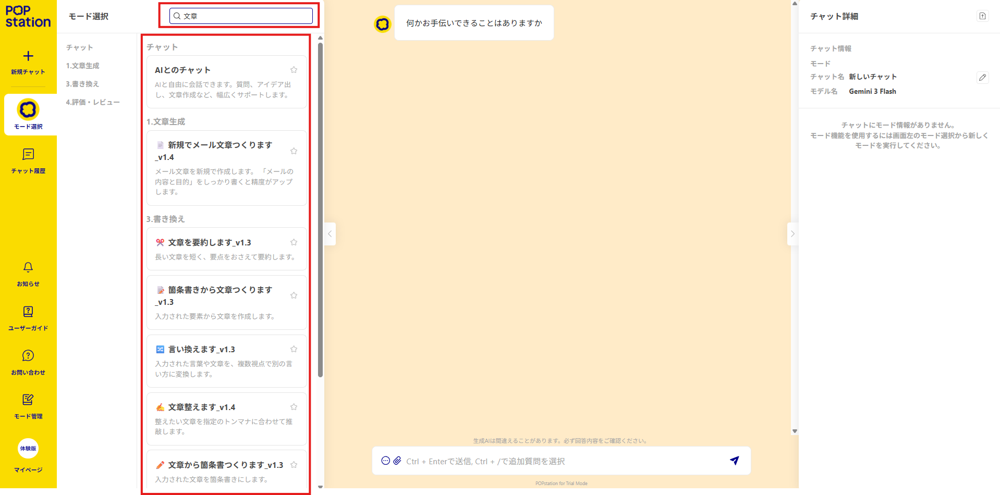